00이 매뉴얼에 대하여
옥외소화전 펌프 용량 계산서는 옥외소화전설비의 수원, 펌프 토출량 · 전양정, 전동기 동력과 압력 판정(배관 사용압력 · 감압장치)을 한 화면에서 산정해 A4 계산서로 정리하는 도구입니다. 근거는 옥외소화전설비의 화재안전성능기준(NFPC 109) 소방청고시 제2025-28호(2026. 3. 1. 시행), 옥외소화전설비의 화재안전기술기준(NFTC 109) 국립소방연구원공고 제2026-9호(2026. 3. 1. 시행)입니다.
| 항목 | 내용 |
|---|---|
| 대상 프로그램 | 옥외소화전 펌프 용량 계산서 MANMIN Ver-5.1(v5.1.0) — 탭 막대 「📘 매뉴얼」 버튼으로 이 문서가 열립니다 |
| 접속 주소 | manminkim-eng.github.io/outdoor-hydrant-calc |
| 매뉴얼 판 | Ver-5.1 (화면 표기와 같은 판 번호, 초판) · 2026-10-15 · 작성 김만민 건축사(㈜대성건축사사무소) |
| 내려받기 | PDF(A4) · 옥외소화전 펌프 용량 계산서 열기 |
| 예제 | 본문 그림은 예제 A(익산 공장 — 옥외소화전 3개 · 실양정 8 m)로 캡처했습니다 — 토출량 700 L/min · 수원 14.000 m³ · 전양정 43 m · 15 HP. 예제 B(물류창고 긴 단지 배관) · C(경사지 — 감압장치)는 부록 A2 |
| 근거 법령 | 옥외소화전설비의 화재안전성능기준(NFPC 109) 소방청고시 제2025-28호(2026. 3. 1. 시행), 옥외소화전설비의 화재안전기술기준(NFTC 109) 국립소방연구원공고 제2026-9호(2026. 3. 1. 시행) — LawMCP(국가법령정보센터) 원문 대조(2026-10-15) |
| 읽는 순서 | 처음이면 1장 → 2장(따라하기) → 필요할 때 3장(화면별 상세). 설계도서 · 소방시설 착공신고에 쓰기 전에는 4장(법령 해설) · 5장(작업 방법) |
01한눈에 보기
설치 없이 브라우저에서 바로 실행되는 단일 페이지 앱(PWA)입니다. 입력한 내용은 브라우저 안에서만 계산되며 서버로 전송되지 않습니다.
무엇을 산정하나
동시사용 개수 · 펌프 토출량 · 수원 · 전양정 · 전동기 동력(kW · HP)
압력 판정
토출압력 1.2 MPa 이상이면 배관 재질(KS D 3562 등), 최저 소화전 방수압 0.7 MPa 초과면 감압장치
배관 마찰손실
구간마다 유량 · 관경 · 길이 · 관부속을 넣으면 Hazen-Williams 식으로 손실 · 유속을 계산
1-1. 화면 구성
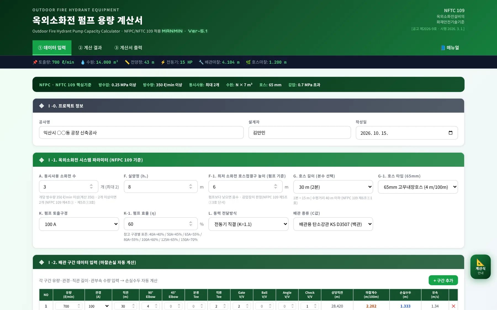
123456- 1작업 탭 · 매뉴얼
- 2요약 바
- 3프로젝트 정보
- 4시스템 파라미터
- 5배관 구간 입력
- 6계산식 안내
| 영역 | 내용 |
|---|---|
| 헤더 · 탭 | 「① 데이터 입력」 → 「② 계산 결과」 → 「③ 계산서 출력」, 오른쪽 끝 「📘 매뉴얼」 |
| 요약 바 | 어느 탭에 있든 토출량 · 수원 · 전양정 · 전동기 · 배관 · 호스 마찰을 한 줄로 보여 줍니다 |
| Ⅰ-0 · Ⅰ-1 · Ⅰ-2 | 프로젝트 정보 → 시스템 파라미터 → 배관 구간 — 값을 바꾸면 즉시 다시 계산됩니다 |
| 계산식 안내 | 오른쪽 「📐 계산식 안내」 — 이용방법 · 수원 · 토출량 · 전양정 · 동력 · 관부속 5개 탭 창 |
1-2. 작업 탭·근거 표시
- 1① 데이터 입력
- 2② 계산 결과
- 3③ 계산서 출력
- 4📘 매뉴얼
- 5근거 · 공고 · 시행일
헤더 오른쪽에는 적용 기준 NFTC 109와 [공고 제2026-9호 · 시행 2026. 3. 1.]이 표시됩니다.
1-3. 설치·보관·매뉴얼
| 항목 | 내용 |
|---|---|
| 설치 | 브라우저 「홈 화면에 추가」 또는 설치 안내 — 설치하면 오프라인에서도 열립니다(앱 본체만 — 매뉴얼은 온라인 전용) |
| 보관 | 계산 결과는 A4 계산서(인쇄 · PDF · JPG)로 남깁니다. 앱은 입력값을 서버에 저장하지 않습니다 |
| 매뉴얼 | 탭 막대 오른쪽 「📘 매뉴얼」 — 이 문서(HTML)와 PDF(A4) |
021분 따라하기
예제 A — 익산 공장, 옥외소화전 3개입니다. 아래 순서대로 넣으면 토출량 700 L/min · 전양정 43 m · 전동기 15 HP가 나옵니다.
- ① 프로젝트 정보공사명 「익산시 ○○동 공장 신축공사」, 설계자, 작성일 — A4 계산서 표제에 들어갑니다(3-1).
- ② 시스템 파라미터소화전 3개 · 실양정 8 m · 최저 호스접결구 펌프 기준 6 m · 65 mm 고무내장호스 30 m(2본) · 100A · 효율 60 % · 전동기 직결 · KS D 3507(3-2).
- ③ 배관 구간펌프 토출 100A 700 L/min 30 m · 옥외 매설 80A 350 L/min 60 m · 소화전 분기 65A 350 L/min 5 m와 관부속 수량 → 마찰손실 합계 4.104 m(3-3).
- ④ 결과 — 전양정「② 계산 결과」 → (8 + 4.104 + 1.200 + 25) × 1.1 = 42.134 → 올림 43 m · 토출압력 0.422 MPa · 최저 소화전 0.351 MPa(3-5).
- ⑤ 수원 · 동력2개 × 350 L/min = 700 L/min · 수원 2 × 7 = 14.000 m³ · 0.163 × 0.700 × 43 × 1.1 ÷ 0.6 = 8.995 kW → 15 HP(3-4 · 3-6).
- ⑥ A4 계산서「③ 계산서 출력」에서 「🖨️ 인쇄 · PDF」 또는 「🖼️ JPG 저장」(3-10).
| 항목 | 예제 A |
|---|---|
| 소화전 기준개수 | 3개 설치 → 2개 적용(NFPC 109 제4조① · NFTC 109 2.1.1) |
| 펌프 토출량 | 2 × 350 = 700 L/min(제5조①3호 · 350 L/min 이상의 계산값) |
| 수원 | 2 × 7 m³ = 14.000 m³(350 L/min × 20분) |
| 배관 · 호스 마찰손실 | 4.104 m · 1.200 m(4 m/100 m × 30 m) |
| 전양정 | 42.134 → 43 m(안전율 10 % · 올림 — MANMIN 참고값) |
| 전동기 | 8.995 kW = 12.062 HP → 15 HP |
| 압력 판정 | 토출압력 0.422 MPa(1.2 MPa 미만 — KS D 3507 가능) · 최저 소화전 0.351 MPa(감압장치 불요, 추정) |
03화면별 기능 상세
3-1. 프로젝트 정보
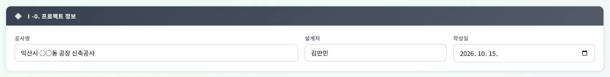
123- 1공사명
- 2설계자
- 3작성일
공사명 · 설계자 · 작성일은 A4 계산서 머리에 그대로 들어갑니다.
3-2. 시스템 파라미터
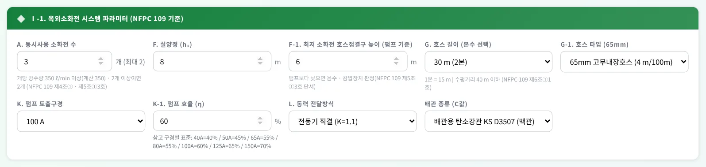
123456789- 1A. 소화전 수 — 2개 이상이면 2개
- 2실양정
- 3최저 소화전 높이 — 감압 판정
- 4호스 길이 15 · 30 · 45 m
- 565 mm 호스 종류
- 6펌프 구경
- 7펌프 효율
- 8전달방식
- 9배관 종류(C값)
| 항목 | 설명 |
|---|---|
| A. 동시사용 소화전 수 | 옥외소화전 설치개수 — 2개 이상이면 2개로 계산합니다(제4조①) |
| F. 실양정 | 펌프(수원 수면)에서 가장 높은 · 먼 옥외소화전 호스접결구까지의 높이(흡입 + 토출) |
| F-1. 최저 소화전 호스접결구 높이 | 펌프 기준 높이(펌프보다 낮으면 음수) — 감압장치 판정에만 쓰고 계산값은 바뀌지 않음(3-5) |
| G. 호스 길이 · 종류 | 15 · 30 · 45 m(1본 15 m) · 65 mm 아마 · 고무내장(제6조②) — 수평거리 40 m 이하 배치(제6조①1호) |
| 펌프 구경 · 효율 · 전달방식 | 효율은 직접 입력(입력란 아래 구경별 참고값) · 전동기 직결 K 1.1 / 그 밖의 원동기 1.15 |
| 배관 종류 | KS D 3507(백관) · KS D 3562 Sch40(흑관) · STS(KS D 3576 · 3595) — 내경과 C값이 바뀝니다(4-5). 토출압력 1.2 MPa 이상인데 KS D 3562 외를 고르면 ⚠ |
3-3. 배관 구간 입력
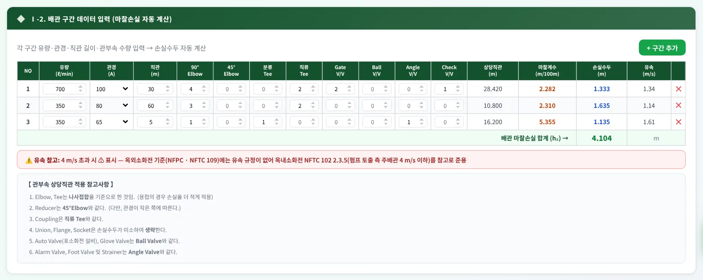
1234- 11구간 — 펌프 토출 100A
- 22구간 — 옥외 매설 80A
- 33구간 — 소화전 분기 65A
- 4＋ 구간 추가
구간마다 유량 · 관경 · 직관 길이와 관부속(90° · 45° 엘보, 분류 · 직류 티, 게이트 · 볼 · 앵글 · 체크 밸브) 수량을 넣으면, 상당직관 = 직관 + Σ(수량 × 상당길이), 손실수두 = 마찰계수(m/100 m) × 상당직관 ÷ 100이 줄마다 계산되고 합계가 h₂가 됩니다. 유속이 4 m/s를 넘으면 ⚠ 표시가 나는데, 옥외소화전 기준에는 유속 규정이 없어 옥내소화전 NFTC 102 2.3.5를 참고로 준용한 것입니다. 예제 A의 구간별 유속은 1.34, 1.14, 1.61 m/s입니다.
3-4. 수원 용량
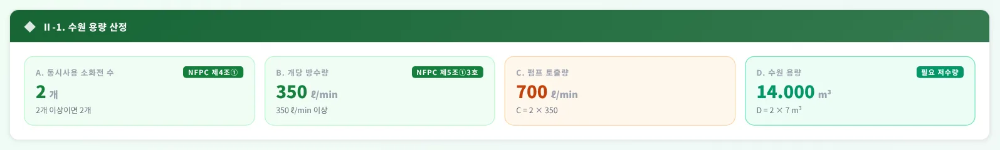
1234- 1A. 소화전 수 — 2개
- 2B. 350 L/min 이상
- 3C. 펌프 토출량
- 4D. 수원 2 × 7 m³
A = min(설치개수, 2), C = A × 350 L/min, D = A × 7 m³(= 350 L/min × 20분)입니다. 예제 A: 2개 · 700 L/min · 14.000 m³. 옥외소화전은 옥상수조 규정이 없습니다.
3-5. 펌프 양정 · 압력 판정
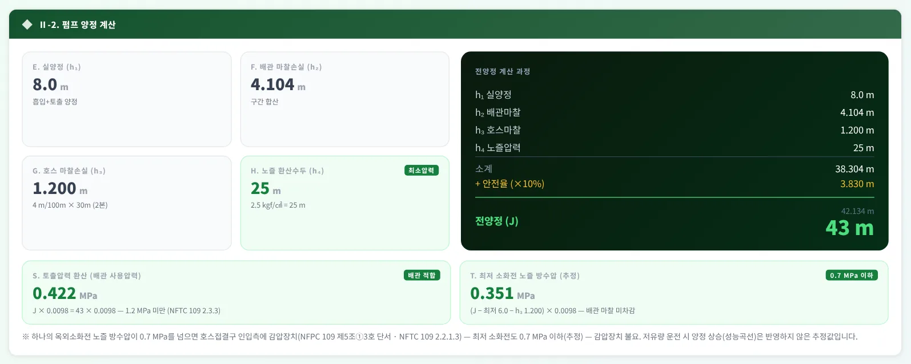
1234567- 1h₁ 실양정
- 2h₂ 배관 마찰손실
- 3h₃ 호스 마찰손실
- 4h₄ 노즐 25 m
- 5소계 · 안전율 · 전양정
- 6S 토출압력 — 배관 사용압력
- 7T 최저 소화전 방수압 — 감압
전양정 J = (h₁ 실양정 + h₂ 배관 마찰 + h₃ 호스 마찰 + h₄ 노즐 25 m) × 1.1 → 올림입니다. 안전율 10 %와 올림은 MANMIN 참고값입니다 — 화재안전기준에는 펌프 양정 식이 없고, 고가수조 낙차(NFTC 109 식 2.2.2.1 H = h₁ + h₂ + 25)와 압력수조 압력(식 2.2.3.1)만 같은 구성으로 정해져 있습니다.
| 항목 | 내용 |
|---|---|
| S. 토출압력 환산 | J × 0.0098 = 0.422 MPa — 배관 사용압력이 1.2 MPa 이상이면 KS D 3562 · 3583(NFTC 109 2.3.3.2) · NFPC 109 제6조③은 KS D 5301도 허용 — 앱 선택지 중에는 KS D 3562만 「배관 적합」 |
| T. 최저 소화전 노즐 방수압(추정) | (J − 최저 소화전 높이 − h₃) × 0.0098 = (43 − 6 − 1.200) × 0.0098 = 0.351 MPa → 0.7 MPa 이하. 넘으면 「감압장치 필요」와 감압 검토 높이(제5조①3호 단서 · NFTC 109 2.2.1.3) |
| 추정의 한계 | 배관 마찰손실을 빼지 않아 실제보다 크게(안전 쪽) 나오며, 소화전 하나만 쓸 때 펌프 양정이 오르는 성능곡선 효과는 넣지 않았습니다 — 감압 범위는 제조사 곡선으로 확인 |
3-6. 전동기 동력
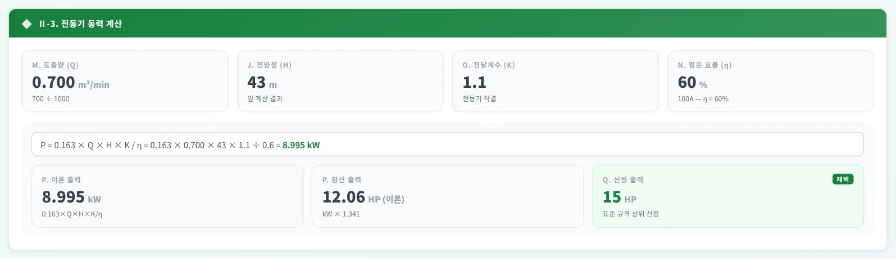
12345- 1Q 토출량
- 2H 전양정
- 3K 전달계수
- 4η 펌프 효율
- 5P 이론 출력
P = 0.163 × Q(m³/min) × H(m) × K ÷ η [kW] — 0.163은 ρg ÷ 60,000(물 1,000 kg/m³ · 9.8 m/s²)입니다. 이론값을 HP(× 1.341)로 바꿔 3 · 5 · 7.5 · 10 · 15 · 20 … HP 표준 규격 중 바로 위 값을 고릅니다. 예제 A: 8.995 kW = 12.06 HP → 15 HP.
3-7. 사례 — 물류창고
- 1긴 단지 배관 — h₂
- 265 mm 아마호스 45 m
- 3전양정
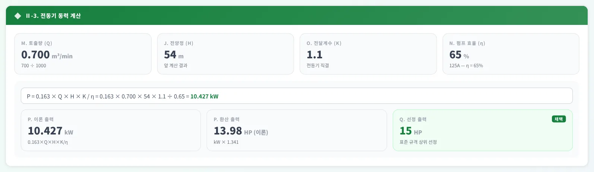
12- 1P 이론 출력
- 2표준 HP
옥외소화전이 6개여도 계산은 2개입니다(제4조①). 단지를 도는 배관이 길어 h₂ = 7.811 m, 65 mm 아마호스 45 m(3본)의 h₃ = 3.600 m가 커져 전양정 54 m · 10.427 kW → 15 HP입니다. 750배 이상의 특수가연물을 저장 · 취급하는 공장 · 창고는 옥외소화전 5 m 이내에 방수총을 따로 둡니다(제6조①3호) — 방수총 수량은 이 앱이 계산하지 않습니다.
3-8. 사례 — 경사지 감압
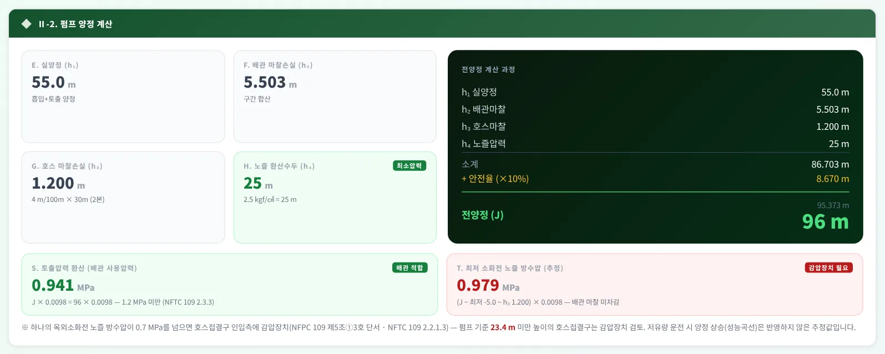
1234- 1전양정
- 2S 토출압력
- 3감압장치 필요
- 4감압 검토 높이
가장 높은 소화전까지 실양정 55 m라 전양정이 96 m(20.082 kW → 30 HP)입니다. 토출압력 0.941 MPa로 1.2 MPa 미만이라 백관도 쓸 수 있지만, 펌프보다 5 m 낮은 소화전의 방수압이 0.979 MPa로 0.7 MPa를 넘어 펌프 기준 23.4 m 미만 호스접결구에 감압장치를 검토합니다(제5조①3호 단서).
3-9. 계산식 안내 창
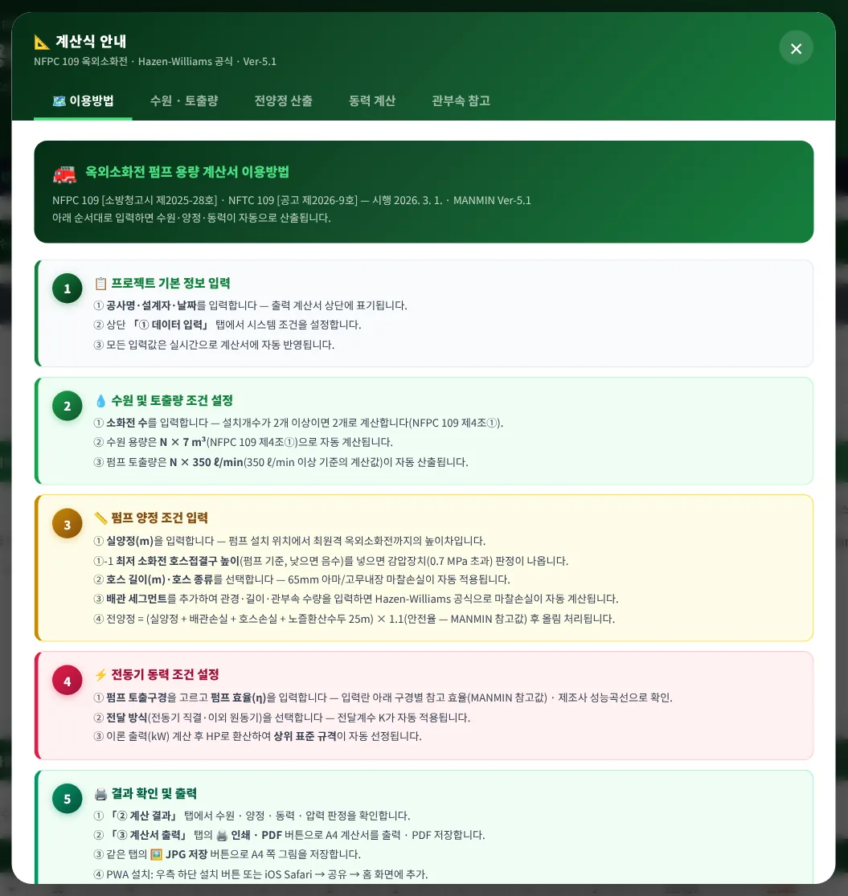
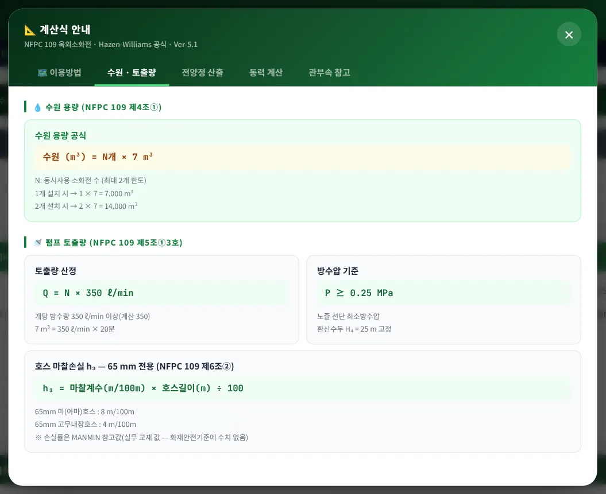
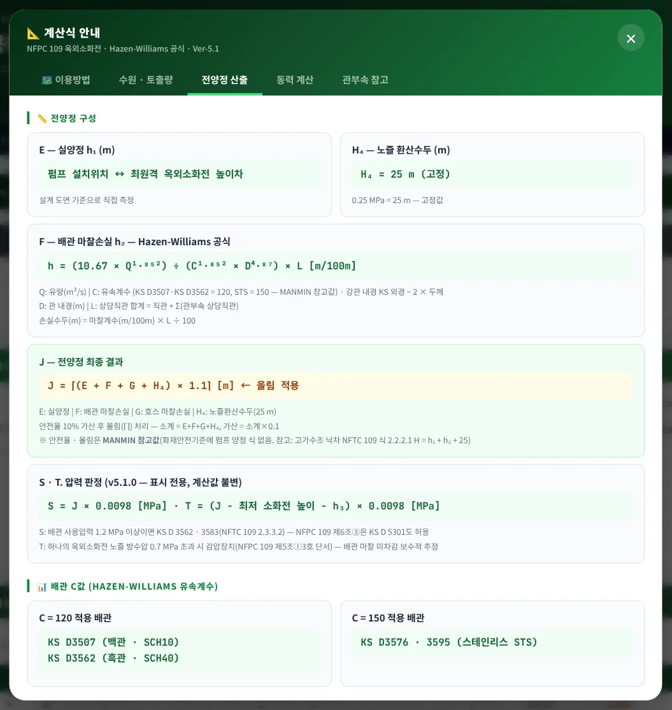
오른쪽 「📐 계산식 안내」는 이용방법 · 수원 · 토출량 · 전양정 산출 · 동력 계산 · 관부속 참고 5개 탭입니다. 식마다 근거 조문과 MANMIN 참고값 여부를 적어 두었습니다.
3-10. A4 계산서·출력
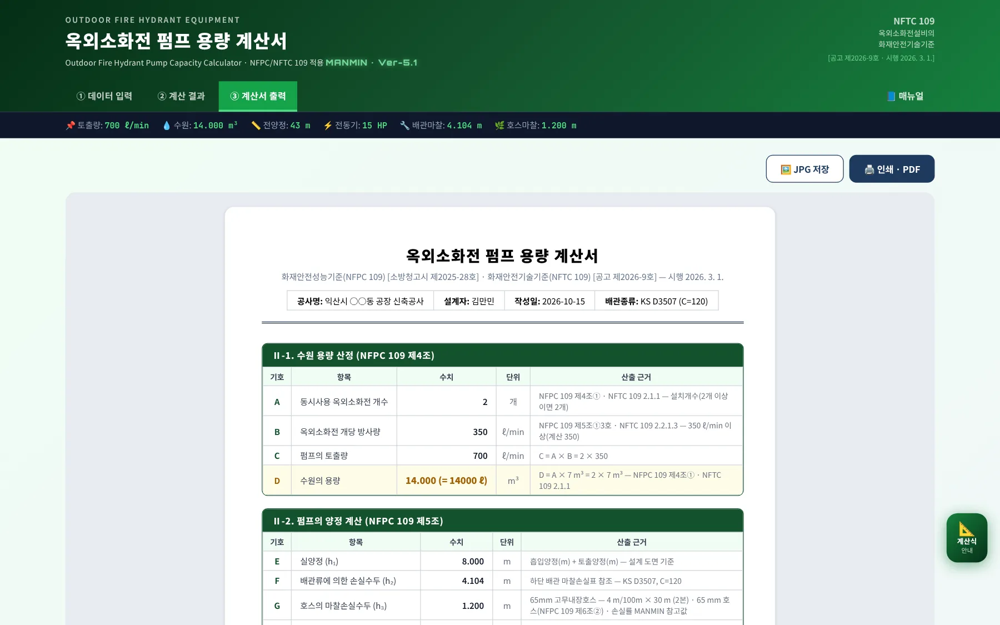
123- 1JPG 저장
- 2인쇄 · PDF
- 3A4 계산서
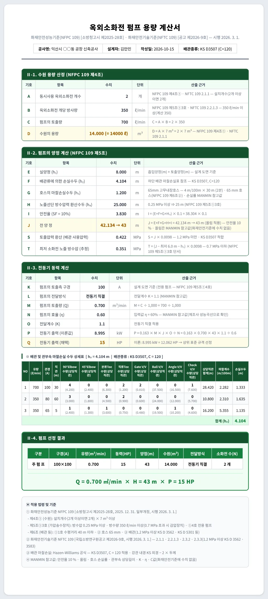
1234- 1Ⅱ-1 수원 — A ~ D
- 2Ⅱ-2 양정 — E ~ J
- 3Ⅱ-3 동력 — K ~ Q
- 4S · T 압력 판정
계산서는 Ⅱ-1 수원(A ~ D) · Ⅱ-2 양정(E ~ J)과 압력 판정(S · T) · Ⅱ-3 동력(K ~ Q) · 배관 마찰손실 상세표 · Ⅱ-4 펌프 선정 결과 · 적용 법령 및 기준 순이며, 화면과 인쇄 · JPG가 같은 내용입니다.
3-11. 휴대전화 화면
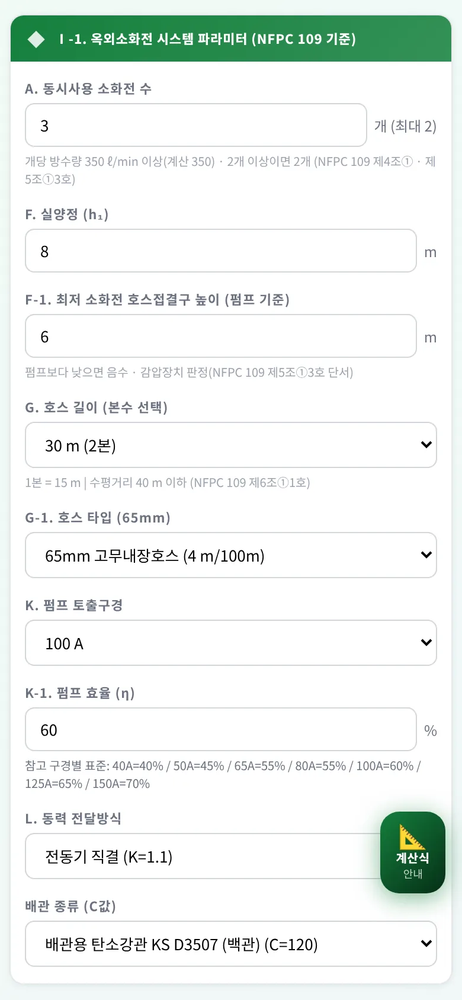
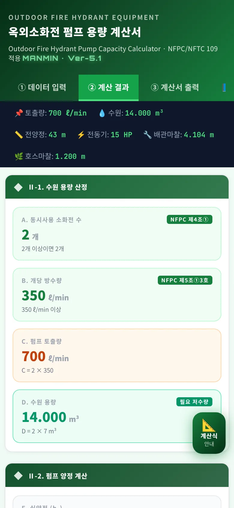
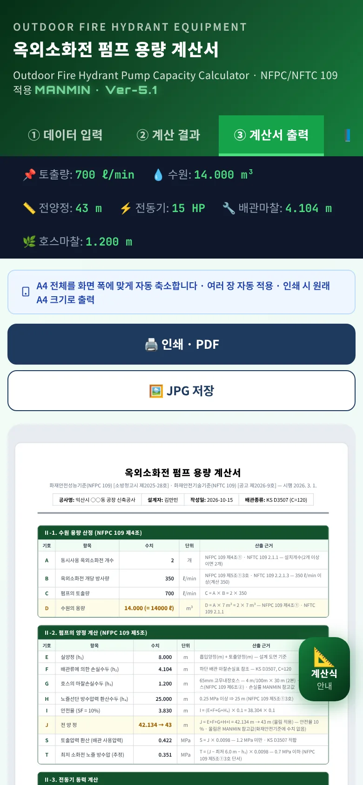
좁은 화면에서는 입력 칸이 한 줄로 쌓이고, 탭 막대는 좌우로 밀어서 봅니다(「📘 매뉴얼」은 오른쪽 끝). A4 계산서는 화면 폭에 맞춰 축소해 보여 주며 인쇄 · JPG는 원본 A4 크기로 나옵니다.
04법령 해설
4-1. 근거 체계
| 기준 | 내용 |
|---|---|
| 소방시설법 시행령 별표 4 제1호사목 | 옥외소화전설비를 설치해야 하는 특정소방대상물(NFPC 109 제2조) |
| NFPC 109 (성능기준 · 고시) | 제4조 수원 · 제5조 가압송수장치 · 제6조 배관 등 · 제11조 겸용 — 소방청고시 제2025-28호(2025. 12. 31. 일부개정, 2026. 3. 1. 시행) |
| NFTC 109 (기술기준 · 공고) | 2.1 수원 · 2.2 가압송수장치 · 2.3 배관 등 — 국립소방연구원공고 제2026-9호(2026. 3. 1. 시행) |
| 경과조치 | NFPC 109 부칙(제2022-43호) 제2조 — 시행 전 건축허가 등을 신청 · 신고했거나 착공신고한 대상은 종전 기준, 개정 기준이 유리하면 그에 따를 수 있음 |
LawMCP(국가법령정보센터 행정규칙) 원문 대조 2026-10-15
4-2. 수원
| 구분 | 기준 |
|---|---|
| 1개 설치 | 1 × 7 = 7 m³ · 토출량 350 L/min |
| 2개 이상 설치 | 2 × 7 = 14 m³ · 토출량 700 L/min |
| 전용 · 유효수량 | 수조로 두면 소방소화설비 전용(제4조②) · 겸용 수조는 풋밸브 · 흡수구 사이의 수량만 유효수량(제4조③) · 다른 설비와 겸용하면 저수량 · 토출량은 각 설비 합계(제11조① · ②) |
4-3. 가압송수장치
| 항목 | 기준 |
|---|---|
| 방수압 · 방수량 | 옥외소화전(2개 이상이면 2개)을 동시에 사용할 때 노즐선단 0.25 MPa 이상 · 350 L/min 이상(제5조①3호 · NFTC 109 2.2.1.3) |
| 감압장치 | 하나의 옥외소화전을 사용하는 노즐선단 방수압이 0.7 MPa를 넘으면 호스접결구 인입측에 감압장치(제5조①3호 단서) — 앱 T 항목 |
| 펌프 | 전용(제5조①4호) · 체절운전 시 정격토출압력 140 % 이하, 150 % 유량에서 65 % 이상 · 성능시험배관(제5조①6호) |
| 고가 · 압력수조 | 낙차 H = h₁ + h₂ + 25 m(NFTC 109 식 2.2.2.1) · 압력 P = p₁ + p₂ + p₃ + 0.25 MPa(식 2.2.3.1) — 20분 이상 유지(제5조② · ③) |
4-4. 설치 · 호스 · 배관
| 항목 | 기준 |
|---|---|
| 배치 | 특정소방대상물 각 부분에서 하나의 옥외소화전까지 수평거리 40 m 이하(제6조①1호) · 호스접결구 높이 지면에서 0.5 ~ 1 m(제6조①2호 · NFTC 109 2.3.1.2) |
| 방수총 | 750배 이상 특수가연물 저장 · 취급 공장 · 창고는 옥외소화전 5 m 이내 방수총(제6조①3호, 2025. 12. 31. 개정) |
| 호스 | 구경 65 mm(제6조② · NFTC 109 2.3.2) · 소화전함은 옥외소화전마다 5 m 이내(제7조①) |
| 배관 재질 · 사용압력 | 1.2 MPa 미만: KS D 3507 · KS D 5301(습식) · KS D 3576 · 3595 · KS D 4311(NFTC 109 2.3.3.1) / 1.2 MPa 이상: KS D 3562 · 3583(2.3.3.2) — NFPC 109 제6조③은 KS D 3562 · KS D 5301 · 동등 이상을 듦 — 앱 S 항목 |
| 유속 | 옥외소화전 기준에는 유속 규정이 없음 — 앱의 4 m/s 경고는 NFTC 102 2.3.5 준용 참고 |
4-5. 마찰손실·강관 내경
| 호칭 | KS D 3507 (백관) | KS D 3562 Sch40 (흑관) | STS (참고) |
|---|---|---|---|
| 40A | 41.6 | 41.2 | 42.8 |
| 50A | 52.9 | 52.7 | 54.8 |
| 65A | 67.9 | 65.9 | 70.0 |
| 80A | 80.7 | 78.1 | 85.0 |
| 100A | 105.3 | 102.3 | 108.2 |
| 125A | 130.8 | 126.6 | 133.4 |
| 150A | 155.2 | 151.0 | 160.0 |
| 200A | 204.7 | 199.9 | 210.0 |
강관 내경(mm)은 KS 외경 − 2 × 두께로 계산한 값입니다(v5.1.0 — 이전 판은 일부 ASME · 다른 규격 값이었음). STS 내경은 제품마다 달라 MANMIN 참고값입니다. C값은 강관 120 · STS 150(MANMIN 참고값)입니다.
4-6. MANMIN 참고값
| 항목 | 내용 |
|---|---|
| 펌프 전양정 안전율 · 올림 | (h₁ + h₂ + h₃ + 25) × 1.1 → 올림 — 화재안전기준에 펌프 양정 식 · 안전율 수치 없음 |
| 65 mm 호스 마찰손실 | 65mm 마(아마)호스 8 m / 100 m · 65mm 고무내장호스 4 m / 100 m — 실무 교재 값 |
| 관부속 상당직관 길이 | 90° · 45° 엘보 · 분류 · 직류 티 · 게이트 · 볼 · 앵글 · 체크 밸브 — 관경별 표(계산식 안내 「관부속 참고」 탭) |
| 전달계수 · 효율 | K 전동기 직결 1.1 · 그 밖 1.15 · 효율은 사용자 입력(구경별 참고 40 ~ 70 %) — 제조사 성능곡선으로 확인 |
| HP 규격 | 3 · 5 · 7.5 · 10 · 15 · 20 · 25 · 30 · 40 · 50 · 60 · 75 · 100 · 125 · 150 · 200 HP — 1 kW = 1.341 HP |
4-7. v5.1.0 정정 (2026-10-15)
| 항목 | 기존 | 정정 |
|---|---|---|
| NFPC 109 판 | [소방청고시 제2025-25호, 2025. 12. 24. 타법개정] | 소방청고시 제2025-28호(2025. 12. 31. 일부개정, 2026. 3. 1. 시행) |
| NFTC 109 | 인용 없음 | 국립소방연구원공고 제2026-9호(2026. 3. 1. 시행) — 헤더 · A4 · 계산식 안내 |
| 조문 표기 | 「제5조①③」 · 「제5조①④」 | 제5조①3호 · ①4호 |
| 350 L/min | 「고정」 | 「이상」 기준 — 계산은 350 L/min |
| 유속 경고 | 근거 없이 「유속 제한 ≤ 4 m/s」 | 「참고 — NFTC 102 2.3.5 준용(옥외소화전 기준에는 없음)」 |
| 강관 내경 | KS D 3562 65A 62.7 mm · KS D 3507 65A 69.0 mm 등 | KS 외경 − 2 × 두께(3562 65A 65.9 · 3507 65A 67.9 mm) |
| 압력 판정 | 없음 | S 토출압력 1.2 MPa(배관 재질) · T 최저 소화전 0.7 MPa(감압장치) · 최저 소화전 높이 입력 |
| 참고값 표기 | 근거 표기 없음 | 안전율 · 올림 · 호스 · 관부속 · K · η · C = MANMIN 참고값 |
| 이용방법 창 · 표기 | 「⚙️ 조건 입력」 · 「📄 계산서」 · 「📱 모바일」 탭, 효율 자동 설정 · η가 「Η」로 보임 | 실제 탭 이름 · 효율 직접 입력 · 대문자 변환 해제 |
| 엔진 | 계산이 화면 컴포넌트 안 | hyd-engine hydCalc 단일화 — 화면 · A4 · 검증 공용, 독립 구현 50,000건 대조 불일치 0 |
05실무 작업 방법
5-1. 단계별 절차
| 단계 | 내용 |
|---|---|
| ① 설치 대상 · 배치 | 소방시설법 시행령 별표 4 제1호사목 설치 대상 확인 · 각 부분 수평거리 40 m 이하로 소화전 배치 · 방수총 대상 여부 |
| ② 개수 · 수원 | 설치개수 → 2개 한도 · 수원 7 m³/개 · 다른 설비와 겸용이면 합산(제11조) |
| ③ 배관 경로 | 펌프 → 옥외 매설 배관 → 가장 높은 · 먼 소화전까지 구간을 나누고 관부속 수량 집계 |
| ④ 전양정 · 동력 · 압력 | 실양정 · 마찰손실 · 호스 · 25 m → 전양정 · 동력 · 표준 HP · 토출압력 1.2 MPa 배관 · 최저 소화전 0.7 MPa 감압 |
| ⑤ 기록 | A4 계산서를 PDF · JPG로 남겨 소방설계도서 · 착공신고 서류에 첨부 |
5-2. 설계 · 승인 전 확인
| 항목 | 확인 |
|---|---|
| 기준 시점 | 건축허가 등 신청일 · 착공신고일에 따라 종전 기준 적용 여부(부칙 경과조치) |
| 펌프 선정 | 정격점 · 체절 140 % · 150 % 유량 65 % — 제조사 성능곡선으로 확인 |
| 배관 · 감압 | 토출압력 1.2 MPa 이상이면 KS D 3562 등 · 0.7 MPa 넘는 소화전은 감압장치 — 앱 판정(추정)을 성능곡선으로 다시 확인 |
| 참고값 | 호스 손실 · 관부속 상당길이 · 효율 · 안전율은 사용 제품 · 사무소 기준으로 바꿔 넣기 |
06문제 해결·FAQ
| 증상 | 해결 |
|---|---|
| 소화전을 6개 넣었는데 2개로 계산돼요 | 옥외소화전은 설치개수가 2개 이상이면 2개로 계산합니다(제4조① · 제5조①3호) |
| 수원이 예전 판과 같은데 양정이 조금 달라졌어요 | KS 강관 내경을 KS 외경 · 두께로 다시 계산했습니다(4-5) |
| 「배관 부적합」 · 「감압장치 필요」가 떠요 | 토출압력 1.2 MPa 이상이면 KS D 3562 등으로 바꾸고, 감압장치 필요면 표시된 높이 미만 호스접결구에 감압장치를 두십시오 — 계산값은 그대로입니다 |
| 유속 ⚠는 지켜야 하나요 | 옥외소화전 기준에는 유속 규정이 없습니다 — 옥내소화전 기준(4 m/s)을 참고로 보여 주는 것입니다 |
| 안전율 10 %는 꼭 넣어야 하나요 | 기준에 없는 MANMIN 참고값입니다. 사무소 기준에 맞게 해석하되 계산서의 「참고값」 표기를 함께 남기십시오 |
| 화면이 예전 판이에요 | 새로 고침(Ctrl+F5) 또는 앱을 닫았다 다시 여십시오 |
부록
A1. 예제 입력값
| 예제 | 조건 | 배관 구간 |
|---|---|---|
| 예제 A | 소화전 3개 · 실양정 8 m · 최저 소화전 6 m · 65mm 고무내장호스 30 m · KS D3507 · 100A · η 60 % | 100A 700L/min 30 m · 80A 350L/min 60 m · 65A 350L/min 5 m |
| 예제 B | 소화전 6개 · 실양정 12 m · 최저 소화전 8 m · 65mm 마(아마)호스 45 m · KS D3507 · 125A · η 65 % | 125A 700L/min 40 m · 100A 700L/min 220 m · 80A 350L/min 40 m |
| 예제 C | 소화전 4개 · 실양정 55 m · 최저 소화전 -5 m · 65mm 고무내장호스 30 m · KS D3507 · 100A · η 60 % | 100A 700L/min 150 m · 80A 350L/min 30 m |
A2. 예제 결과
| 예제 | 개수 | 토출량(L/min) | 수원(m³) | h₂(m) | 전양정(m) | HP | 토출압(MPa) | 최저 방수압(MPa) |
|---|---|---|---|---|---|---|---|---|
| 예제 A | 2 | 700 | 14.000 | 4.104 | 43 | 15 | 0.422 | 0.351 |
| 예제 B | 2 | 700 | 14.000 | 7.811 | 54 | 15 | 0.530 | 0.416 |
| 예제 C | 2 | 700 | 14.000 | 5.503 | 96 | 30 | 0.941 | 0.979 |
예제 C는 최저 소화전 방수압이 0.7 MPa를 넘어 펌프 기준 23.4 m 미만 호스접결구에 감압장치를 검토합니다.
A3. 버전 변경 내역
| 버전 | 내용 |
|---|---|
| Ver-5.1 · v5.1.0 (2026-10-15) | NFPC 109(제2025-28호) · NFTC 109(제2026-9호) 원문 대조 근거 정정, KS 강관 내경, 압력 판정(1.2 MPa 배관 · 0.7 MPa 감압), MANMIN 참고값 표기, 계산 엔진 단일화, 탭 막대 「📘 매뉴얼」 · 사용자 매뉴얼(4-7) |
| Ver-5.0 (2026-09) | MANMIN 디자인 통일(헤더 · 탭 · 요약 바 · A4 · JPG 저장), PWA |
A4. 용어
| 용어 | 뜻 |
|---|---|
| 호스접결구 | 옥외소화전에서 호스를 연결하는 구 — 지면에서 0.5 ~ 1 m(제6조①2호) |
| 방수총 | 대량의 물을 멀리 방사하는 노즐 장치 — 특수가연물 750배 이상 공장 · 창고에 설치(제6조①3호) |
| 전양정 | 펌프가 내야 하는 전체 수두 — 실양정 + 마찰손실 + 노즐 방수압 환산수두 |
| 상당직관 | 관부속의 손실을 같은 지름 직관 길이로 바꾼 값 |
| 체절운전 | 토출 측 밸브를 닫고 펌프를 돌리는 성능시험(제5조①6호) |